地政学
リヤドは湾岸の港から離れた内陸首都で、王宮、閣僚機関、外交団、防衛関連機能が集中します。石油収入、宗教的正統性、地域外交を調整し、イラン、湾岸諸国、米中関係、紅海安全保障へ国家の判断を送る中枢です。

🇸🇦 サウジアラビア / アジア / World City Atlas
ナジュド高原のオアシス都市から国家首都へ伸びた砂漠の巨大都市。王宮、官庁、金融街、移民労働、宗教規範、娯楽改革、郊外住宅が同じ幹線道路で結ばれています。
都市の骨格
リヤドは港町ではなく、内陸の政治首都です。ナジュドの乾いた台地に道路、王宮、官庁、金融地区、郊外住宅が広がり、石油国家の富と非石油経済への転換が日常の建設風景として見えます。
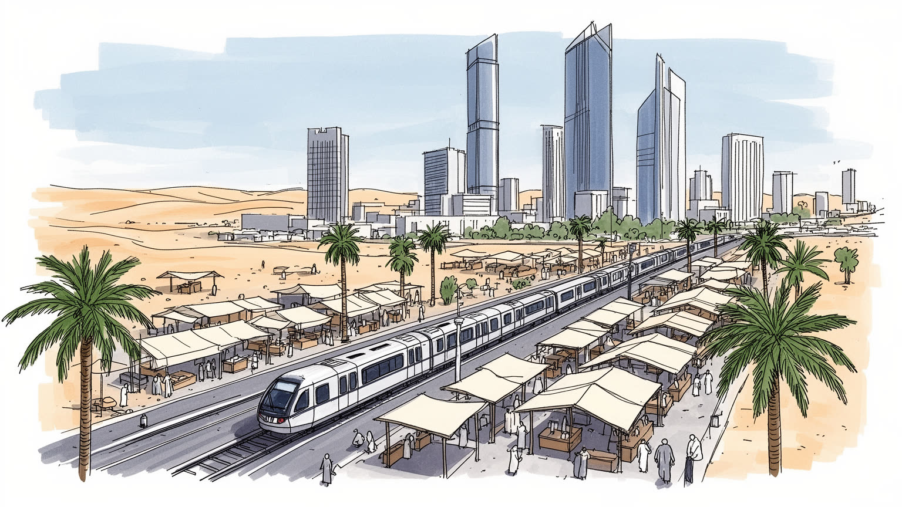
リヤドは湾岸の港から離れた内陸首都で、王宮、閣僚機関、外交団、防衛関連機能が集中します。石油収入、宗教的正統性、地域外交を調整し、イラン、湾岸諸国、米中関係、紅海安全保障へ国家の判断を送る中枢です。
行政、銀行、不動産、建設、医療、教育、IT、娯楽投資が伸び、外国人労働者が現場を支えます。白いオフィス街の成長は、低賃金の清掃、配送、家事、警備、建設労働と結びつき、雇用改革の成否が都市の持続性を左右します。
リヤドの暮らしはイスラムの礼拝、家族、部族的な記憶、国家儀礼に支えられます。同時に映画館、音楽祭、現代美術、飲食街が増え、保守的規範と若い世代の公共文化が同じ都市空間で調整され続けています。今も。
生活は車移動、モール、住宅区画、学校、モスク、職場を軸に広がります。観光ではマスマク要塞、ディルイーヤ、スーク、高層街、砂漠体験が入口になり、猛暑、水資源、家賃、移民労働の条件も都市理解に欠かせません。
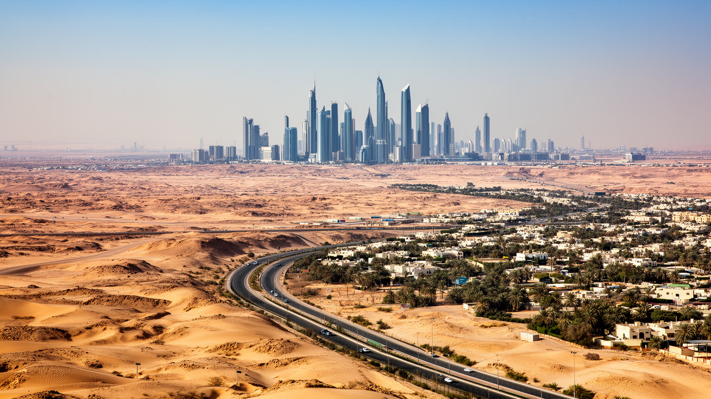
リヤドの特徴は、海に面した交易都市ではなく、ナジュド高原の内陸に置かれた政治首都であることです。アラビア半島の中央部にあるため、都市の成長は港湾の自然な集積より、王権、行政、幹線道路、空港、石油収入の再配分によって形作られてきました。乾いた台地に広がる直線的な道路、広い区画、郊外住宅、官庁街、高層オフィスは、砂漠の制約を国家計画で越えようとする都市の姿です。紅海側のジッダが巡礼と商業の玄関であり、東部州が石油産業の心臓であるのに対し、リヤドは判断と制度を集める場所です。国家予算、外交、宗教政策、軍事、安全保障、投資計画がここで組み立てられ、国内の地域を結ぶ命令系統が首都から伸びます。内陸であることは弱点でもあります。水、食料、建材、労働力、観光客は長い物流網に頼り、猛暑と乾燥は都市生活の条件を厳しくします。それでもリヤドが巨大化したのは、サウジ国家が自らの中心を内陸の歴史的基盤に置き続けたからです。都市を読むには、湾岸の金融都市や港町と比べるだけでなく、砂漠高原に国家中枢を固定する意味を見る必要があります。周辺のワディや旧集落、部族の記憶は、首都の拡張を単なる近代開発ではなく、内陸アラビアの政治地理として見せます。距離の長さと中心への集権が、都市の緊張を生んでいます。判断にも映ります。
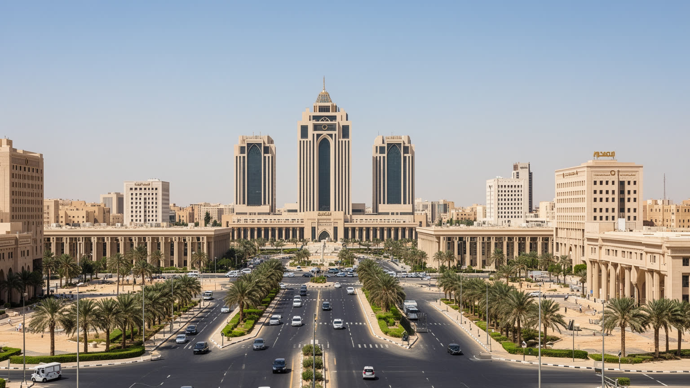
リヤドでは都市の中心性が市場の大きさだけでなく、王権と行政制度の配置から生まれます。王宮、閣僚機関、諮問評議会、外交施設、治安機関、国営企業、投資機関が近い距離で働き、国家の優先順位が道路、建物、会議、儀礼として街に現れます。サウジアラビアは石油輸出国であると同時に、二つの聖地を抱える王国であり、宗教的正統性、部族的結合、国際同盟、若年人口の雇用を同時に扱わなければなりません。リヤドはその調整の作業場です。外交面では湾岸協力、イランとの緊張と対話、イエメン問題、紅海航路、米国、中国、ロシアとの関係が重なります。国内面では女性の就労、娯楽解禁、宗教警察の役割変化、住宅供給、サウジ人雇用化が政策課題になります。これらは抽象的な改革ではなく、通勤する官僚、建設現場、警備の配置、国際会議、ホテルの稼働、学校教育に反映されます。リヤドを歩くことは、王国が伝統と近代化をどのように同じ都市で管理しているのかを見ることでもあります。権力は遠い宮殿の中だけでなく、道路網、許認可、祝祭、投資発表、都市計画の速度として日常に入り込んでいます。そのため首都の再開発は、景観政策であると同時に統治のメッセージでもあり、国民へ改革の方向を示す舞台になります。式典と日常が近いことが、リヤドの首都性を強めています。続きます。
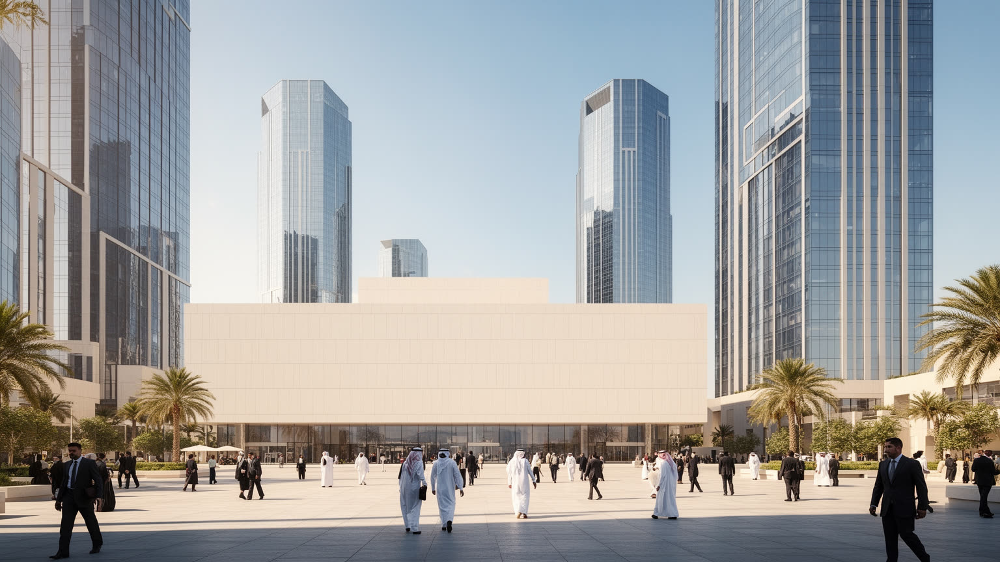
リヤドの経済を理解するには、石油が市内で採れるかどうかより、石油収入が首都でどのように配分されるかを見る必要があります。東部州の油田と輸出港で生まれる富は、国家予算、政府系ファンド、公共事業、金融機関、不動産開発を通じてリヤドの建設と雇用に流れ込みます。近年の都市政策は、行政首都を非石油経済の実験場に変えることを目指しています。金融、IT、医療、教育、観光、娯楽、スポーツ、国際会議、文化施設が誘致され、企業の地域本部を置かせる政策も進みました。高層街や新しい地区は、単なる景観の更新ではなく、石油依存を減らす国家戦略の展示でもあります。ただし、経済転換は見た目の派手さだけでは成功しません。民間雇用が本当に増えるか、若いサウジ人が技能を得られるか、女性が働き続けられるか、外国人労働者の権利が改善されるかが重要です。建設ブームは短期的な成長を作りますが、完成後の運営、維持管理、教育、医療、公共交通が伴わなければ都市の負担になります。リヤドの経済は、国家資本による速度と、生活を支える制度の厚みの間で試されています。数字の成長だけでなく、働く人が都市に根を下ろせるかが次の課題です。起業支援や研究機関も増えていますが、失敗を許す制度、技能を移す教育、地域企業の育成がなければ厚みは出ません。資本の速さと人材育成の遅さをつなぐ仕組みが問われます。
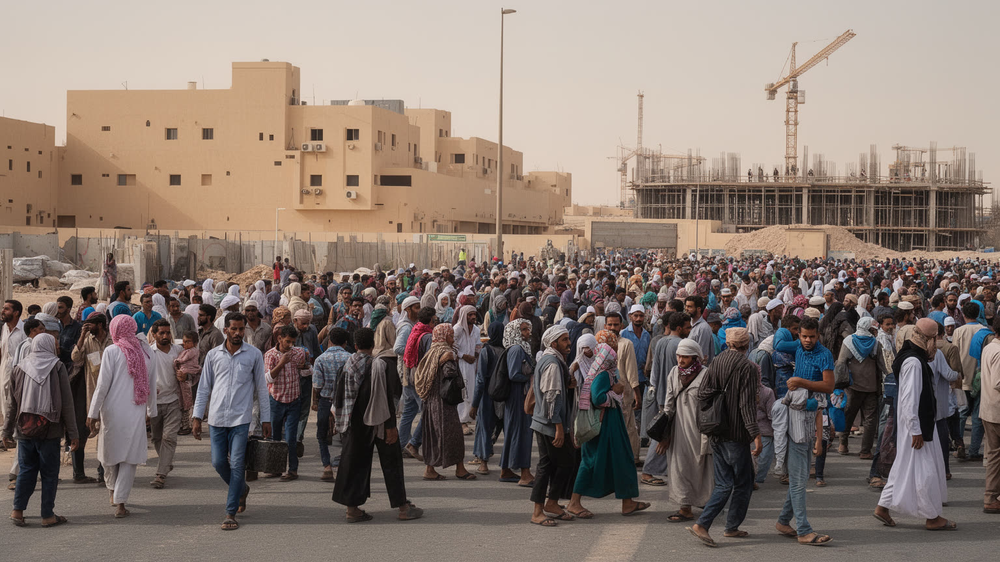
リヤドの成長は、サウジ人の行政職や専門職だけでなく、南アジア、東南アジア、アフリカ、中東各地から来る外国人労働者によって支えられています。建設現場、清掃、警備、配送、家庭内労働、飲食、ホテル、病院、運転、設備管理は、都市の見えにくい基盤です。高層ビルやモールが増えるほど、現場で働く人の宿舎、移動、賃金、休息、医療、在留資格の問題も大きくなります。サウジ化政策は国民の雇用を増やす重要な課題ですが、外国人労働に依存してきた産業構造を急に変えることは簡単ではありません。若いサウジ人には公的部門以外の働き方、女性には通勤と職場環境、企業には技能訓練と賃金負担が問われます。移民労働者は都市の便利さを支えながら、家族と離れ、母語でない制度の中で生活することが多くあります。彼らの存在を抜きにしてリヤドの現代化は語れません。都市の公平さは、国籍や雇用形態の違う人が安全に働き、住み、相談できるかで測られます。リヤドが国際都市として成長するなら、巨大開発の完成度だけでなく、労働者の生活条件を都市の評価に含める必要があります。送金で家族を支える人、契約更新に不安を持つ人、休みに集まる広場も、首都の社会を形作る存在です。雇用の階層を見れば、都市の便利さが誰の時間で成り立つかが分かります。格差もなお残ります。
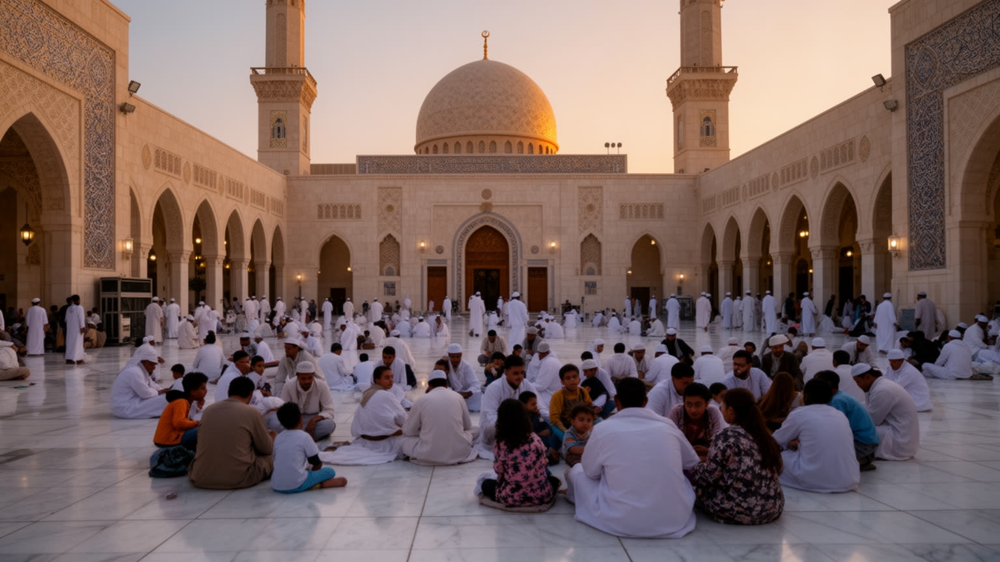
リヤドの日常にはイスラムの礼拝時間、ラマダン、家族の集まり、モスク、宗教教育が深く組み込まれています。聖地メッカやメディナを抱える国の首都として、リヤドは宗教的な正統性と国家運営を切り離せません。かつて公共空間は保守的な規範に強く方向づけられ、男女の分離、服装、娯楽、店の営業時間にも宗教的秩序が影響しました。近年は映画館、音楽イベント、スポーツ大会、飲食街、女性の就労や運転が広がり、公共空間の使い方が大きく変わっています。しかし、変化は単純な自由化ではありません。家族の価値、宗教的感覚、世代差、地方出身者の期待、外国人住民の習慣が都市の中で調整されます。ラマダンの夜のにぎわい、金曜礼拝、祝祭、結婚式、葬送、慈善活動は、リヤドの社会を結びつける時間です。同時に娯楽の拡大は若者に新しい居場所を与え、観光客にも都市を開きます。リヤドの宗教生活を読むには、制度の変化だけでなく、人々がどのように祈り、働き、遊び、家族と過ごすかを見る必要があります。信仰と改革は対立する言葉ではなく、同じ街路とモールで日々すり合わせられる実践です。礼拝室、家族席、断食明けの食事、慈善の習慣は、新しい娯楽施設の中にも残り、都市の節度を作ります。変化は一気に過去を消すのではなく、慣習を組み替えながら進みます。静かに残ります。
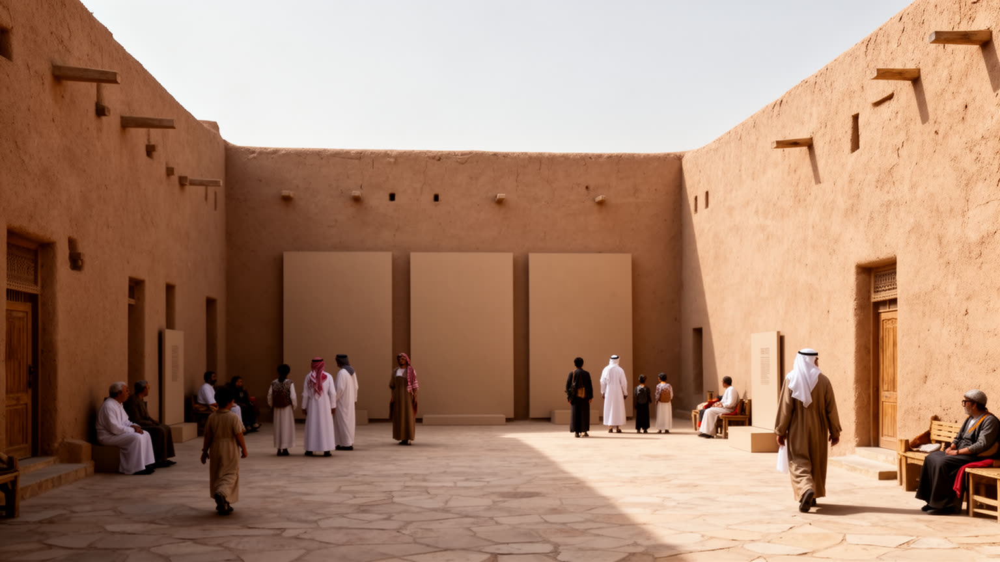
リヤド近郊のディルイーヤは、サウジ国家の起源を語るうえで欠かせない場所です。泥レンガの建築、ワディ沿いの集落、アトトライフ地区の遺構は、現代の高層街とは異なる時間を都市に与えています。ここで示される歴史は、単なる観光資源ではなく、王国が自らの正統性をどのような土地と記憶に結びつけているかを示す政治的な景観です。リヤドの中心部にもマスマク要塞や古いスークがあり、征服、統合、交易、部族、宗教改革の記憶が観光動線へ組み込まれています。近年の整備は、伝統建築を保存しながら高級飲食、博物館、イベント、ホテルを加え、過去を現代的な体験へ変えています。この変換には価値と緊張があります。保存によって記憶は見えやすくなりますが、生活の場だった場所が消費の舞台へ変わることもあります。歴史を美しく整えすぎると、対立や貧しさ、移動、女性や労働者の経験が見えにくくなります。ディルイーヤを読むことは、王国の始まりをたどるだけでなく、国家がどの記憶を強調し、どの記憶を背景に置くのかを読むことです。リヤドの heritage は、古い壁と新しい国家ブランドが重なる場所にあります。観光客に整えられた路地の外側にも、親族関係、季節の行事、語られにくい労働の歴史が残っています。保存された壁は、国家の物語と地域の暮らしを同時に映します。
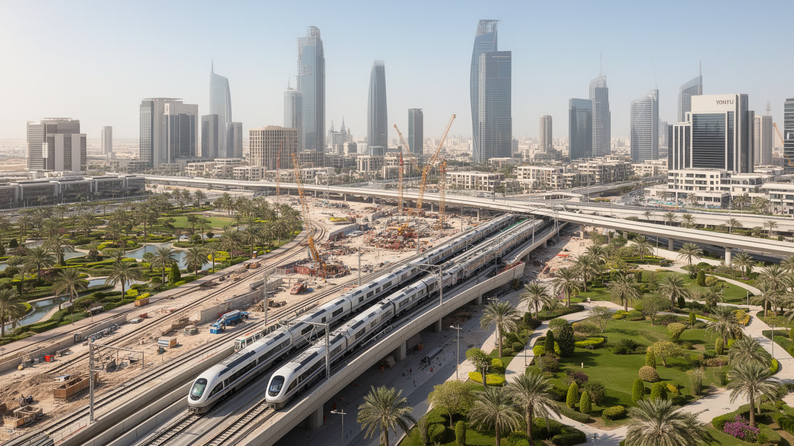
リヤドの都市形態は、広い道路、低密度の住宅区画、大型モール、官庁地区、分散した職場を中心に発展してきました。車は移動の基本であり、暑さ、距離、歩道環境、公共交通の不足が徒歩の生活を難しくしてきました。郊外へ広がる住宅地は家族のプライバシーや車移動に適していますが、通勤時間、渋滞、駐車、燃料消費、公共空間の不足を生みます。都市の拡大は水道、電力、冷房、道路維持、学校、病院を広範囲に伸ばすため、行政コストも高くなります。近年のメトロとバス網の整備は、この車依存を変える大きな試みです。駅周辺が本当に歩きやすくなり、住宅、職場、学校、商業が結びつけば、リヤドの生活は大きく変わります。しかし鉄道を作るだけでは十分ではありません。炎天下でも歩ける日陰、横断しやすい道路、女性や子どもが安心して使える駅、低所得労働者が払える運賃、郊外から駅への接続が必要です。都市の形は生活の時間を決めます。リヤドが持続的な首都になるには、車で移動する巨大都市から、公共交通と近隣生活を組み合わせる都市へ転換できるかが重要です。道路の幅だけでなく、人が歩ける距離が未来の都市力になります。駅前の土地利用、バス停の日陰、歩道の連続性が変われば、通勤だけでなく買い物や通学の感覚も変わります。移動の選択肢が増えるほど、車を持たない人の自由も広がります。
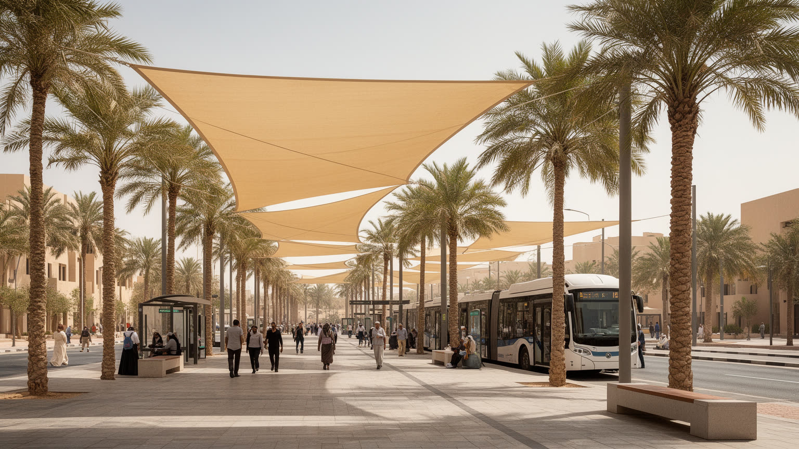
リヤドの暮らしは、砂漠性気候との交渉の上に成り立っています。夏の酷暑、乾燥、砂嵐、強い日射は、通勤、建設、屋外労働、学校、観光、電力需要に影響します。冷房は生活を可能にする基盤ですが、その分だけ電力消費が増え、発電と環境負荷の問題を抱えます。水も同じです。内陸の大都市であるリヤドは、地下水、淡水化水、長距離送水、再生水、貯水施設に頼り、家庭、庭園、建設、清掃、農業的な緑化を支えています。都市の緑は快適さを生みますが、乾燥地での維持には水の配分が必要です。気候変動が進むほど、熱波、砂塵、短時間の強雨、排水の問題が目立ちます。乾燥都市では雨が少ないからこそ、急な降雨への備えが不足しやすく、道路や低地の冠水が起きることがあります。リヤドの気候適応は、巨大なインフラだけでなく、日陰のある歩道、断熱された住宅、労働時間の調整、公共施設の冷却、低所得者への電力費支援、節水型の緑化として考える必要があります。砂漠都市の豊かさは、どれだけ緑を見せるかではなく、限られた水と冷却をどのように公平に使うかで測られます。学校の校庭、建設現場、バス待ちの空間で暑さを避けられるかは、健康と尊厳に直結する都市政策です。涼しさを買える人だけが守られる都市では、成長の公平性は保てません。日々の働き方にも深く影響します。
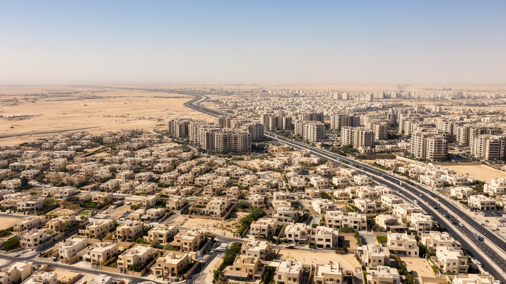
リヤドの住宅地は、家族のまとまり、プライバシー、車移動を前提に広がってきました。戸建てや低層住宅、塀に囲まれた敷地、近隣のモスク、学校、商店、親族との距離は、都市の生活感を作ります。家族は社会保障の重要な単位であり、結婚、子育て、高齢者の世話、食事、祝祭、相談を支えます。一方で、都市が拡大し住宅価格が上がると、若い世代が希望する家を得ることは難しくなります。通勤距離が伸び、職場と住宅が離れるほど、女性の就労、保育、学校送迎、介護の負担も増えます。高層マンションや複合開発は新しい選択肢を生みますが、従来の家族生活や近隣関係とは違う管理と費用を求めます。外国人労働者の住まいはさらに別の問題です。現場に近い宿舎、共同生活、家族帯同の制約、通勤手段は、都市の表面から見えにくい生活条件です。リヤドの住宅政策は、国民の持ち家志向、若年人口、女性の社会参加、外国人労働、公共交通を同時に扱わなければなりません。家が広いか狭いかだけでなく、誰がどの距離を毎日移動し、誰が家事とケアを担うのかを見ると、リヤドの都市問題がより具体的に見えてきます。住宅の質は室内だけでなく、近所で歩ける場所、子どもの遊び場、女性が働く職場への移動、暑さを避ける公共空間とも結びつきます。家族を支える都市とは、家の外の負担も軽くする都市です。
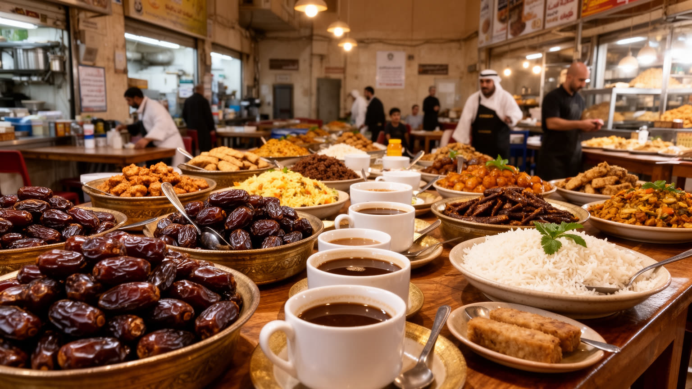
リヤドの食は、家庭のもてなし、部族的な記憶、移民労働、現代的な外食産業が重なる場所です。カブサやマトン料理、デーツ、アラビックコーヒーは、単なる名物ではなく、家族の集まり、来客、祝祭、ラマダンの食卓と結びつきます。古いスークでは香辛料、布、金、日用品が並び、交渉と会話が都市の記憶を残します。一方で大型モール、カフェ、国際チェーン、ホテルレストラン、フードデリバリーは、若い世代と外国人住民の生活を変えています。食の現場を支えるのは、調理人、配達員、清掃、輸入業者、倉庫、冷蔵物流、農産物市場で働く多様な人びとです。内陸の砂漠都市では、食料と水の供給は長い物流網に支えられ、暑さは保存、配送、労働時間に影響します。観光客にとって市場と食は入りやすい文化体験ですが、住民にとっては家族の結びつきと日々の休息でもあります。リヤドの国際化は、食卓の多様化としても現れます。南アジア、フィリピン、レバント、エジプト、欧米の味が職場と住宅地の近くに入り込み、都市の人の構成を静かに映します。食と市場を歩くと、首都の公式な顔だけでなく、働く人、家族、移民、観光客が同じ都市でどう交わるかが見えてきます。価格の上昇、労働条件、食品ロス、冷房された消費空間への偏りも、食文化の課題として読む必要があります。格差も残ります。
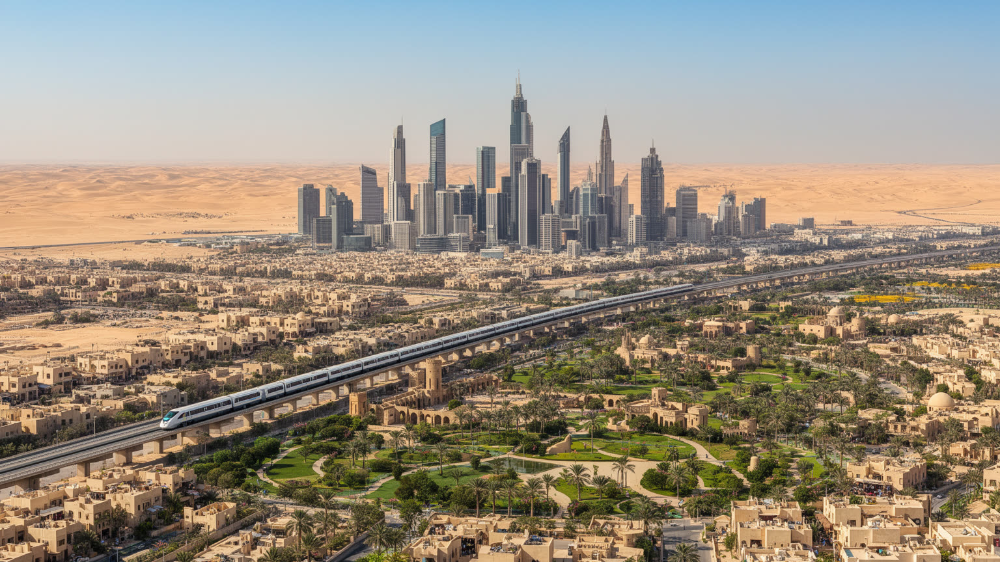
リヤドの未来は、巨大開発の速度と社会の包摂を両立できるかにかかっています。首都は人口を吸い寄せ、雇用、教育、医療、文化、投資を集中させていますが、その集中は住宅価格、渋滞、水需要、電力消費、労働格差、地域間格差を強める可能性があります。若いサウジ人には安定した民間雇用と技能形成が必要であり、女性には職場、交通、保育、家族規範との調整が必要です。外国人労働者には契約、賃金、医療、住まい、相談の仕組みが欠かせません。都市が国際イベントや高層街で注目されるほど、見えにくい労働と生活の条件を丁寧に扱う必要があります。気候面では酷暑と水資源が最大の制約であり、緑化や冷房に頼るだけでなく、都市形態そのものを変える必要があります。公共交通、日陰、歩ける近隣、公園、低炭素の建物は、生活の質と環境対策を同時に支えます。リヤドは、石油国家が非石油時代へ向かうための象徴的な実験場です。その成功は、目立つプロジェクトの完成だけでなく、住民と労働者が日々使える都市になるかで決まります。砂漠の首都が世界都市になるには、速さよりも持続する生活基盤が問われます。都市の成熟は、豪華な地区だけでなく、暑い日に休める歩道、相談できる職場、通える学校、使いやすい交通にも表れます。改革の成果は、弱い立場の人が都市に残れるかで試されます。